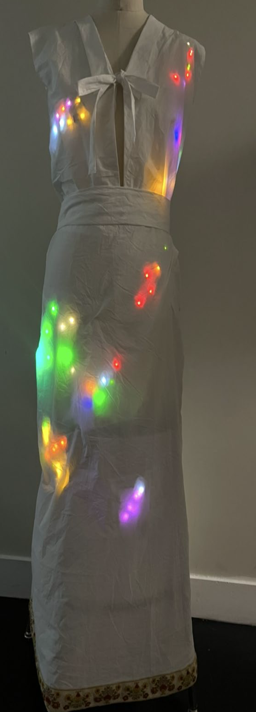

Future of Folk
Clothing / Fashion Design — December 2025
This project is a speculative folk clothing design, with a physical mock up of the integration of Estonian folk culture with tech-centered fashion. How do we speculate on the future of folk clothing? We must stay true to the original concepts and meaning behind the clothes while still innovating and adapting with trends and patterns. This helps cultural preservation by maintaining youth involvement, leading to generational cultural education.
Visit the Project Site ↗